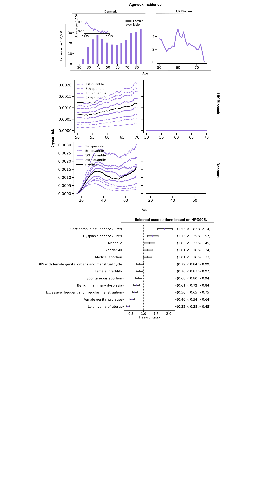

Alexander Wolfgang Jung, Peter Christoffer Holm, Kumar Gaurav, Jessica Xin Hjaltelin, Davide Placido, Laust Hvas Mortensen, Ewan Birney, Soren Brunak, Moritz Gerstung
Oesophagus Stomach Colorectal Liver Pancreas Lung Melanoma Breast Cervix Uteri Corpus Uteri
Ovary Prostate Testis Kidney Bladder Brain Thyroid Non Hodgkin Lymphoma Multiple Myeloma AML
Summary plots:
Age-sex Incidence for the Danish and UKB cohort based on development-train.
Lower/Upper quantiles of the 5-Year absolute risk as evaluated for the validation cohorts respectively. (left: female, right: male)
Forest plot based on HPD-90% – coloured for significant effects based on HPD-95%. A maximum of 30 associations are shown.
